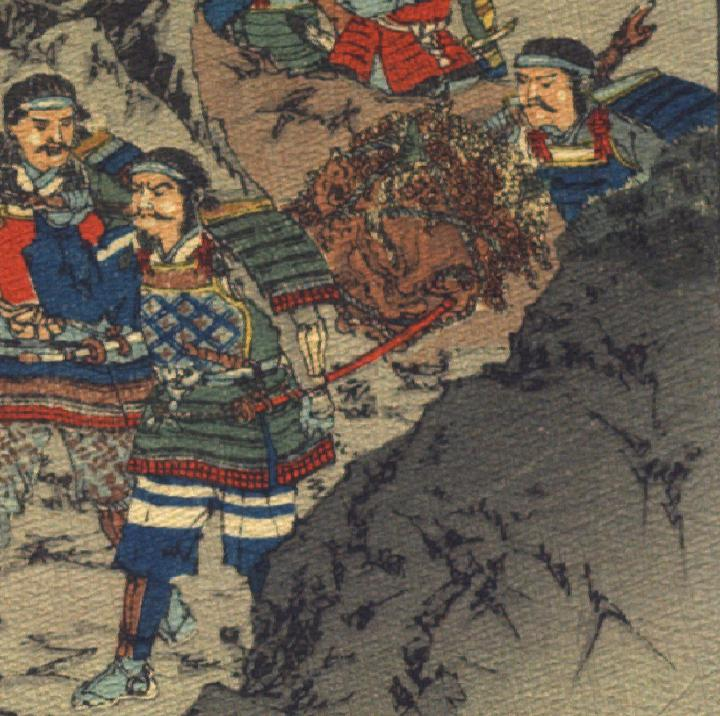

酒呑童子の頭部。肌は茶色く、頭は縮れた髪で覆われ、額に角が生えている。耳は大きく、先が尖っている。目は釣りあがり、鼻は横に潰れ、口は横に裂けている。縄で締め上げられ、棒につられて、2人の武士に担がれている。
出典：親書誌：U426_nichibunken_0113：Les Ogres d'Oyeyama／日付：2006／資源識別子：U426_nichibunken_0113_0007_0000
Copyright (c)2010- International Research Center for Japanese Studies, Kyoto, Japan. All rights reserved.